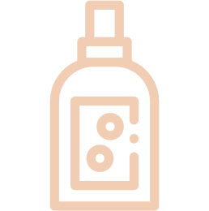
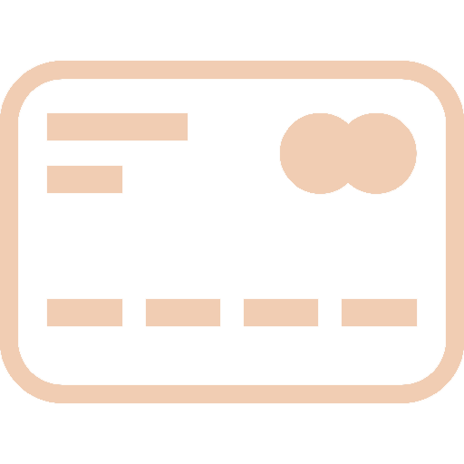
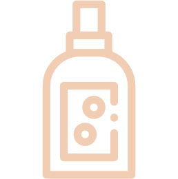
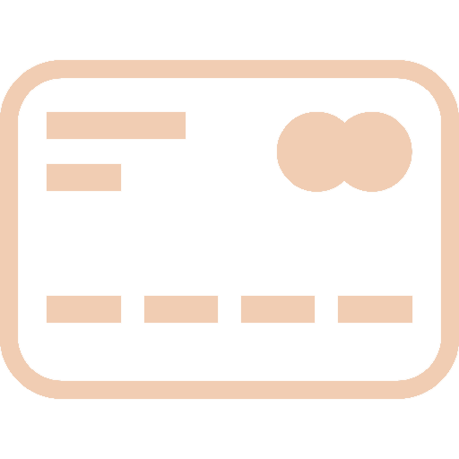

후원 방법
후원은 개인의 능력 안에서, 원하는 만큼 할 수 있습니다.
부디 어렵게 생각하지 마시고 후원에 참가해주세요.
후원 종류는 아래와 같습니다.
|  |  |
| 물품 및 사료 후원 | 기금 후원 |
| 결연 후원 | 광고 후원 |
후원 방법
후원은 개인의 능력 안에서, 원하는 만큼 할 수 있습니다.
부디 어렵게 생각하지 마시고 후원에 참가해주세요.
후원 종류는 아래와 같습니다.
|  |  |
| 물품 및 사료 후원 | 기금 후원 |
| 결연 후원 | 광고 후원 |
생활에 필요한 물품들과 사료를 후원 받습니다.
후원하실 물품들을 아래 주소로 보내주세요.
주소 : 대전광역시 OO구 OO동 LiveUs
운영 및 치료에 필요한 기금을 후원 받습니다.
아래 계좌로 송금해주시고 폼을 작성해주세요.
기금 후원에 참가해주시는 분들께 감사의 편지와 함께
소정의 상품을 보내드립니다.
계좌 : 농협 000-0000-0000-00 조은빈
센터의 아이와 결연을 맺어 정기적으로 후원합니다.
센터의 아이들 중에 한 아이에게 마음에 가지만 입양하기는 어려운 상황이라면 결연을 맺어 정기적으로 후원하실 수 있습니다. 후원 기간은 3개월 단위로 이루어지며 1개월에 3만원으로 아이의 생활에 도움을 줄 수 있습니다. 결연 후원에 참가해주시는 분들께서는 감사의 편지와 함께 후원하시는 아이의 사진을 정기적으로 받아보실 수 있습니다. 자세한 문의는 센터로 연락 주시길 바랍니다.
연락처 : 123-4567-8910
짧은 광고를 시청하면 아이들에게 후원됩니다.
아래에 게시된 짧은 광고를 시청하시면 소정의 수익금이 아이들에게 돌아옵니다. 눈 깜짝할 새에 지나가는 30초로 아이들의 삶이 바뀔까 생각하실 수 있습니다. 물론 한 명의 짧은 광고 시청만으로 아이들에게 가족이 생기고, 커다란 집이 생기지는 않습니다. 하지만 한 명의 참여가 모이고 모여 아이들에게 따뜻한 잠자리가 되고, 밥 한 끼가 됩니다.